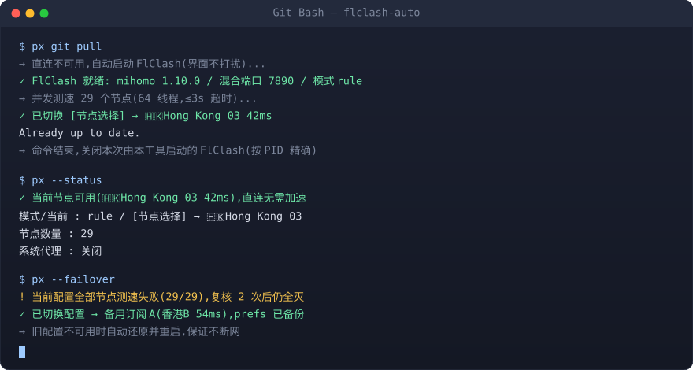

像用 npm 一样用代理
px git pull —— 需要网络时才启动 FlClash,自动挑最快节点, 命令结束就关掉。不常驻、不手点、不误杀。
Windows 10/11 · Python 3 标准库 · 零依赖 · MIT
irm https://raw.githubusercontent.com/fool415/flclash-auto/main/install.ps1 | iex
装到 %LOCALAPPDATA%\flclash-auto 并加入用户 PATH,不需要管理员。

为什么不用「常开代理」三种做法的代价
客户端常驻 + 系统代理常开
开机自启、常吃内存;忘关就一直走代理,看视频、下大文件白耗流量。
需要时手动开关
每天十几次点击;忘了开就 git push 超时,忘了关就整机绕代理。
只有一个订阅
机场超售或被打时全灭,临时找订阅、改配置、重启客户端,活儿全停了。
命令级按需启停
只有命令真的需要代理时才启动,跑完按 PID 精确关闭,不动你手动开的实例。
并发测速、自动钉最快
64 线程测全部节点,把选择组沿链钉到最低延迟,并告诉你钉到了哪个节点。
订阅整体挂掉自动切
当前配置全灭时备份并切到备用配置;备用也不可用就还原重启,不至于断网。
三步上手
本工具只负责调度,不提供节点。没有节点可先 px --buy 找订阅入口。
上面的 PowerShell 命令;装完新开终端,px 即可用。
px 加在命令前面px git pull / px pip install xxx / px --test / px --status。
常见问题
会不会把我正在用的 FlClash 关掉?
不会。自动关闭只针对本次由本工具启动的 PID;你手动开的实例不受影响。只有显式 --stop 才按进程名全停。
需要管理员权限吗?
不需要。计划任务也注册在当前用户下,注册表只动当前用户的 Internet Settings。
支持 macOS / Linux 吗?
主体是 Windows。px.sh 可在 Git Bash 使用,但系统代理与进程管理依赖 Windows;其它平台请直接给 FlClash 开 TUN。
会改我的系统代理吗?
使用期间会设置,并在开始前快照、结束后还原;手动 --stop 没有快照,只在残留仍指向 7890 时关闭开关。
订阅内容会上传吗?
不会。全程本地读写 FlClash 自己的配置,没有任何上报(除你主动执行的命令与测速请求)。